← 回股市觀察
盤中觀察 每日盤中觀察
2026/09/16 12:30 即時快照 · 當日盤中成交金額前 50 檔（上市 35＋上櫃 15）· 公開資料整理
45,954.33
加權指數 +442.84 點（+0.97%）
這是盤中快照，不是收盤結果。資料時間 2026-09-16 12:30:57（TWSE MIS 即時行情，上市／上櫃皆 delay=0）。
13:30 收盤（含最後一盤集合競價）會再變動；量能是以「已過交易時間比例」推估（尾盤大量時會低估）；
技術面標籤是把盤中現價代入原本以收盤價設計的規則（日線歷史只到前一交易日 9/14）。
統計範圍：候選池＝20260915 與 20260914 收盤成交值前段（上市 250／上櫃 130）取聯集，共 406 檔；再以今日盤中累計成交金額排序取
上市前 35＋上櫃前 15。漲跌家數是候選池內的數字，不是全市場（即時全市場家數證交所沒有開放端點）。
本頁為公開資料的整理與觀察，不構成投資建議，不報牌、不預測、不下買賣決策。
時程紀錄（本日盤中分析）
| 階段 | 時間 |
|---|
| 任務開始 | 由排程自動觸發（週一～週五 12:30） |
| 分析腳本執行 | 12:30:28 → 12:30:57（29.1 秒） |
| 資料快照時間 | 2026-09-16 12:30:57（行情時間戳 12:30:50） |
| 本頁產出 | 見頁尾版本時間 |
逐階段 log：
| 12:30:28 | START 盤中分析開始 |
| 12:30:28 | ① 抓即時指數（tse_t00 / otc_o00） |
| 12:30:28 | ② 建立候選池（20260915 與 20260914 成交值前段，上市＋上櫃） |
| 12:30:29 | 候選池共 406 檔 |
| 12:30:29 | ③ 抓即時候選池行情 |
| 12:30:57 | 取得即時報價 406 檔 |
| 12:30:57 | 候選池漲跌：漲 353／跌 43／平盤 10（快照時間 12:30:50） |
| 12:30:57 | ④ 選出 50 檔（上市 35＋上櫃 15），門檻 22.02 億 |
| 12:30:57 | ⑤ 抓日線歷史並算技術面 |
| 12:30:57 | ⑥ 產出（50 檔） |
K 線圖怎麼看：每一檔都附 K 線圖 —— 黃圈是轉折低點、粉圈是轉折高點（
虛線圈代表還沒確認的轉折）、藍線是月線（20 日均線）；頸線取最近兩個轉折低點之間的最高轉折高點，
突破頸線才會標示。
紅色 K 棒＝收盤高於開盤、綠色＝收盤低於開盤。
好條件最多的（前 10）
不好條件最多的（前 10）
好條件（8 項）：站上月線、月線向上、底底高、頭頭高、突破頸線、相對大盤強、攻擊量（量增＋上漲）、守住今日高檔（距今日高點 1% 內）。
不好條件（8 項）：跌破前低、今日下跌、相對大盤弱、在月線之下、量增下跌（出貨）、貼近今日低點（1% 內）、跌破昨日低點、月線下彎。
兩邊都是同一組日線資料＋盤中即時價算出來的「符合項目數」，只是把方向相反的條件分開數；
條件數不是評分或推薦，不構成投資建議。
盤中爆量（估量比 ≥ 1.5）（5 上市 2／上櫃 3）
今日疲弱（跌幅前 10）（10 上市 9／上櫃 1）
逐檔（50 檔，依盤中成交金額排序）
台積電 2330 上市
2390 +10.0（+0.42%）
底部墊高、未過前高 盤中成交值 214.1 億・全榜第 1 名（上市第 1 名）・相對大盤 -0.55
好條件 3/8：月線向上、底底高、守住今日高檔（距今日高點 1% 內）
不好條件 3/8：相對大盤弱、在月線之下、貼近今日低點（1% 內）
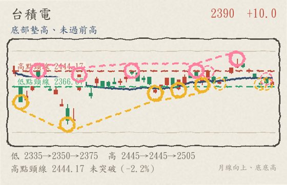
2026/09/16 12:30 盤中 2390（+0.42%），相對加權指數 -0.55 個百分點；盤中累計成交值 214.1 億（全榜第 1 名，上市第 1 名）。以交易時間比例推估的今日成交量約為 20 日均量的 0.66 倍（量縮）。日線結構：底部墊高、未過前高；現價在月線 2410.25 之下（-0.8%）。距前一日（9/14）高點 -0.62%，距今日高點 -0.21%、距今日低點 +0.63%。圖為日線，最後一根是今日 12:30 為止的進行中 K 棒。
↑ 回上方清單
聯發科 2454 上市
4600 +170.0（+3.84%）
高點墊高、底部不穩 盤中成交值 181.33 億・全榜第 2 名（上市第 2 名）・相對大盤 +2.87
好條件 6/8：站上月線、月線向上、頭頭高、突破頸線、相對大盤強、守住今日高檔（距今日高點 1% 內）
不好條件 0/8：無
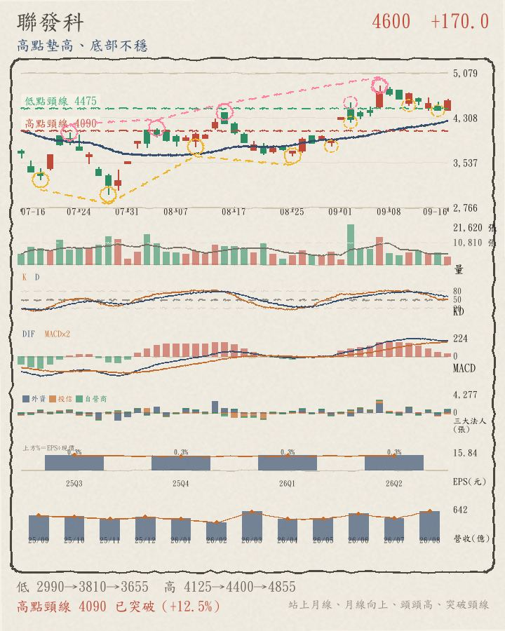
2026/09/16 12:30 盤中 4600（+3.84%），相對加權指數 +2.87 個百分點；盤中累計成交值 181.33 億（全榜第 2 名，上市第 2 名）。以交易時間比例推估的今日成交量約為 20 日均量的 0.69 倍（量縮）。日線結構：高點墊高、底部不穩；現價在月線 4214.5 之上（+9.2%）。距前一日（9/14）高點 +0.55%，距今日高點 -0.54%、距今日低點 +3.72%。圖為日線，最後一根是今日 12:30 為止的進行中 K 棒。
↑ 回上方清單
南亞科 2408 上市
494.5 +29.0（+6.23%）
區間或轉弱 盤中成交值 134.2 億・全榜第 3 名（上市第 3 名）・相對大盤 +5.26
好條件 2/8：相對大盤強、守住今日高檔（距今日高點 1% 內）
不好條件 2/8：在月線之下、月線下彎
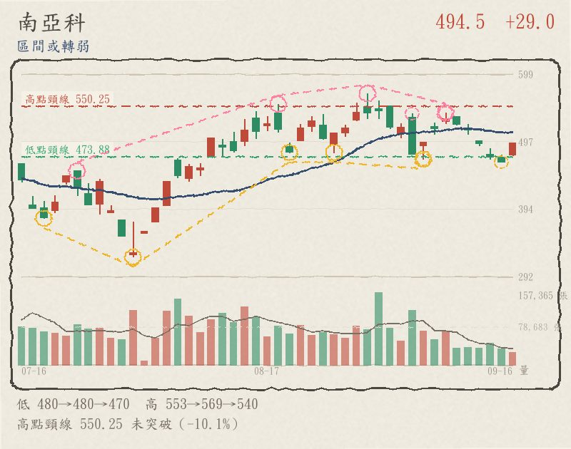
2026/09/16 12:30 盤中 494.5（+6.23%），相對加權指數 +5.26 個百分點；盤中累計成交值 134.2 億（全榜第 3 名，上市第 3 名）。以交易時間比例推估的今日成交量約為 20 日均量的 0.49 倍（量縮）。日線結構：區間或轉弱；現價在月線 510.25 之下（-3.1%）。距前一日（9/14）高點 +3.78%，距今日高點 -0.10%、距今日低點 +4.11%。圖為日線，最後一根是今日 12:30 為止的進行中 K 棒。
量縮
↑ 回上方清單
台達電 2308 上市
1725 +55.0（+3.29%）
底部墊高、未過前高 盤中成交值 131.39 億・全榜第 4 名（上市第 4 名）・相對大盤 +2.32
好條件 3/8：底底高、相對大盤強、守住今日高檔（距今日高點 1% 內）
不好條件 2/8：在月線之下、月線下彎
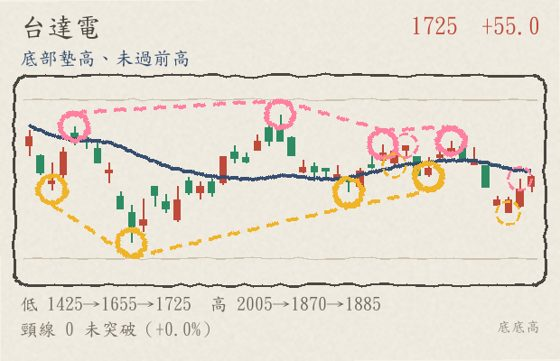
2026/09/16 12:30 盤中 1725（+3.29%），相對加權指數 +2.32 個百分點；盤中累計成交值 131.39 億（全榜第 4 名，上市第 4 名）。以交易時間比例推估的今日成交量約為 20 日均量的 1.07 倍（量平）。日線結構：底部墊高、未過前高；現價在月線 1755.5 之下（-1.7%）。距前一日（9/14）高點 +0.58%，距今日高點 -0.29%、距今日低點 +4.23%。圖為日線，最後一根是今日 12:30 為止的進行中 K 棒。
↑ 回上方清單
聯電 2303 上市
142.5 +4.0（+2.89%）
上升趨勢（底底高＋頭頭高） 盤中成交值 117.75 億・全榜第 5 名（上市第 5 名）・相對大盤 +1.92
好條件 6/8：站上月線、月線向上、底底高、頭頭高、突破頸線、相對大盤強
不好條件 0/8：無
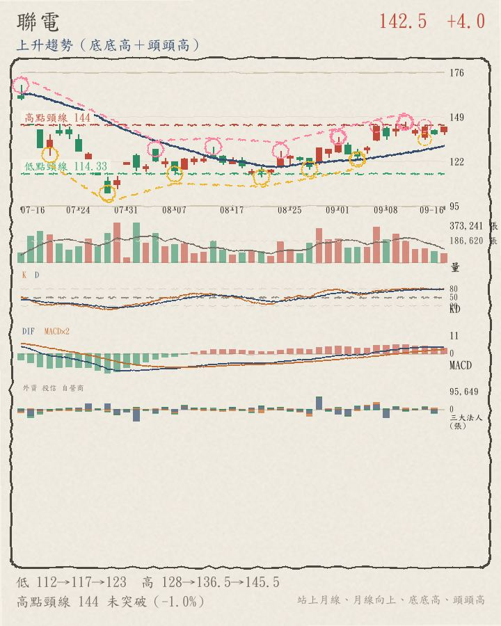
2026/09/16 12:30 盤中 142.5（+2.89%），相對加權指數 +1.92 個百分點；盤中累計成交值 117.75 億（全榜第 5 名，上市第 5 名）。以交易時間比例推估的今日成交量約為 20 日均量的 0.63 倍（量縮）。日線結構：上升趨勢（底底高＋頭頭高）；現價在月線 129.8 之上（+9.8%）。距前一日（9/14）高點 +1.06%，距今日高點 +0.00%、距今日低點 +3.26%。圖為日線，最後一根是今日 12:30 為止的進行中 K 棒。
↑ 回上方清單
大立光 3008 上市
6275 +220.0（+3.63%）
上升趨勢（底底高＋頭頭高） 盤中成交值 114.77 億・全榜第 6 名（上市第 6 名）・相對大盤 +2.66
好條件 4/8：月線向上、底底高、頭頭高、相對大盤強
不好條件 2/8：跌破前低、在月線之下
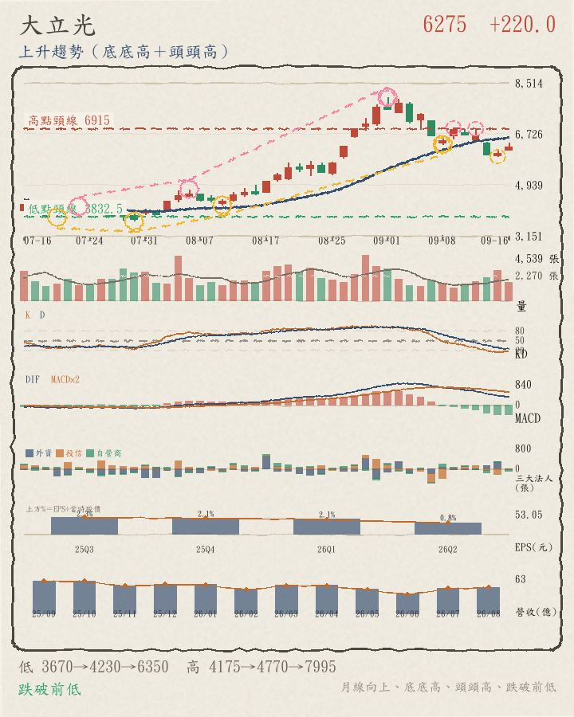
2026/09/16 12:30 盤中 6275（+3.63%），相對加權指數 +2.66 個百分點；盤中累計成交值 114.77 億（全榜第 6 名，上市第 6 名）。以交易時間比例推估的今日成交量約為 20 日均量的 0.97 倍（量平）。日線結構：上升趨勢（底底高＋頭頭高）；現價在月線 6555 之下（-4.3%）。距前一日（9/14）高點 +1.29%，距今日高點 -2.18%、距今日低點 +2.03%。圖為日線，最後一根是今日 12:30 為止的進行中 K 棒。
↑ 回上方清單
穩懋 3105 上櫃
471 +17.0（+3.74%）
區間或轉弱 盤中成交值 112.32 億・全榜第 7 名（上櫃第 1 名）・相對大盤 +2.77
好條件 5/8：站上月線、月線向上、相對大盤強、攻擊量（量增＋上漲）、守住今日高檔（距今日高點 1% 內）
不好條件 0/8：無
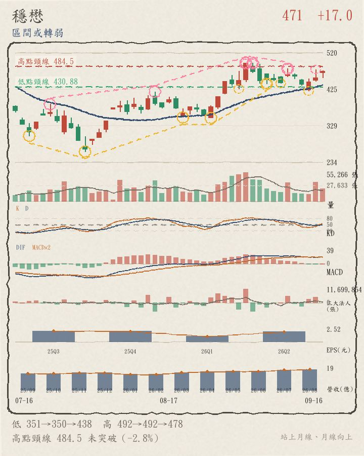
2026/09/16 12:30 盤中 471（+3.74%），相對加權指數 +2.77 個百分點；盤中累計成交值 112.32 億（全榜第 7 名，上櫃第 1 名）。以交易時間比例推估的今日成交量約為 20 日均量的 1.1 倍（量增）。日線結構：區間或轉弱；現價在月線 429.85 之上（+9.6%）。距前一日（9/14）高點 -1.05%，距今日高點 -0.42%、距今日低點 +3.74%。圖為日線，最後一根是今日 12:30 為止的進行中 K 棒。
↑ 回上方清單
聯亞 3081 上櫃
2925 +250.0（+9.35%）
高點墊高、底部不穩 盤中成交值 111.97 億・全榜第 8 名（上櫃第 2 名）・相對大盤 +8.38
好條件 6/8：月線向上、頭頭高、突破頸線、相對大盤強、攻擊量（量增＋上漲）、守住今日高檔（距今日高點 1% 內）
不好條件 1/8：在月線之下
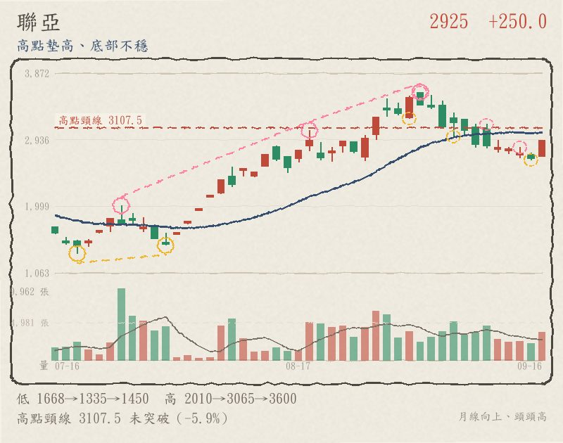
2026/09/16 12:30 盤中 2925（+9.35%），相對加權指數 +8.38 個百分點；盤中累計成交值 111.97 億（全榜第 8 名，上櫃第 2 名）。以交易時間比例推估的今日成交量約為 20 日均量的 1.19 倍（量增）。日線結構：高點墊高、底部不穩；現價在月線 3026 之下（-3.3%）。距前一日（9/14）高點 +6.56%，距今日高點 -0.17%、距今日低點 +8.53%。圖為日線，最後一根是今日 12:30 為止的進行中 K 棒。
↑ 回上方清單
強茂 2481 上市
168.5 +15.0（+9.77%）
高點墊高、底部不穩 盤中成交值 101.76 億・全榜第 9 名（上市第 7 名）・相對大盤 +8.80
好條件 6/8：站上月線、月線向上、頭頭高、突破頸線、相對大盤強、攻擊量（量增＋上漲）
不好條件 0/8：無
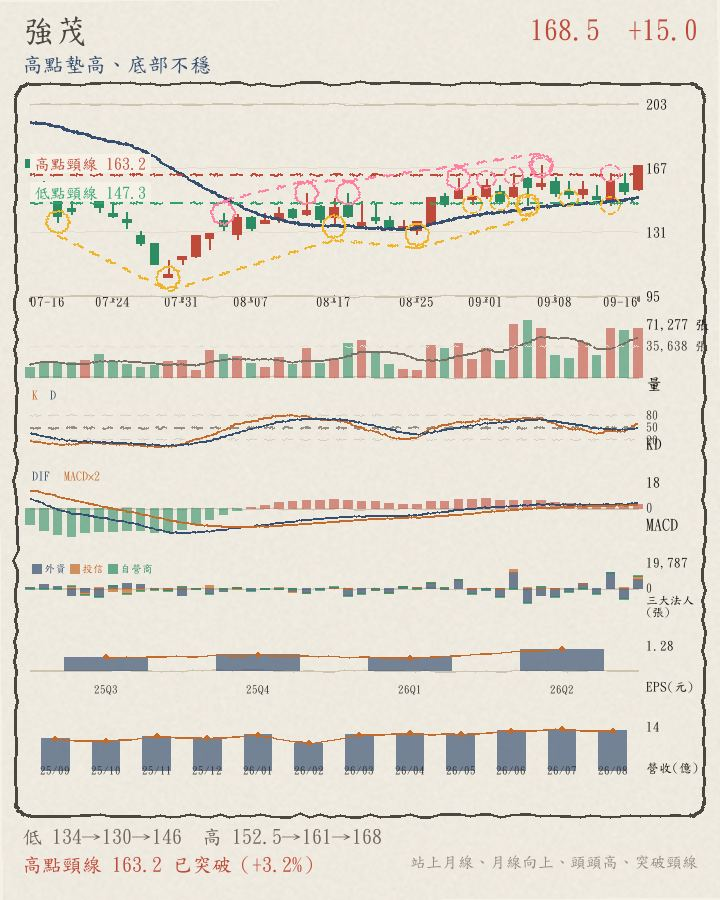
2026/09/16 12:30 盤中 168.5（+9.77%），相對加權指數 +8.80 個百分點；盤中累計成交值 101.76 億（全榜第 9 名，上市第 7 名）。以交易時間比例推估的今日成交量約為 20 日均量的 2.13 倍（爆量）。日線結構：高點墊高、底部不穩；現價在月線 148.875 之上（+13.2%）。距前一日（9/14）高點 +3.06%，距今日高點 +0.00%、距今日低點 +9.42%。圖為日線，最後一根是今日 12:30 為止的進行中 K 棒。
↑ 回上方清單
華邦電 2344 上市
169.5 +10.0（+6.27%）
區間或轉弱 盤中成交值 101.35 億・全榜第 10 名（上市第 8 名）・相對大盤 +5.30
好條件 1/8：相對大盤強
不好條件 2/8：在月線之下、月線下彎
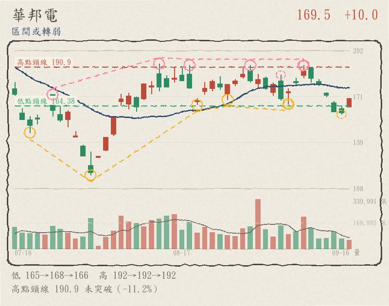
2026/09/16 12:30 盤中 169.5（+6.27%），相對加權指數 +5.30 個百分點；盤中累計成交值 101.35 億（全榜第 10 名，上市第 8 名）。以交易時間比例推估的今日成交量約為 20 日均量的 0.58 倍（量縮）。日線結構：區間或轉弱；現價在月線 176.625 之下（-4.0%）。距前一日（9/14）高點 +3.35%，距今日高點 +0.00%、距今日低點 +3.67%。圖為日線，最後一根是今日 12:30 為止的進行中 K 棒。
量縮
↑ 回上方清單
頎邦 6147 上櫃
204.5 +4.5（+2.25%）
區間或轉弱 盤中成交值 96.78 億・全榜第 11 名（上櫃第 3 名）・相對大盤 +1.28
好條件 6/8：站上月線、月線向上、突破頸線、相對大盤強、攻擊量（量增＋上漲）、守住今日高檔（距今日高點 1% 內）
不好條件 0/8：無
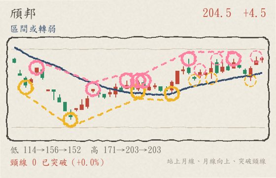
2026/09/16 12:30 盤中 204.5（+2.25%），相對加權指數 +1.28 個百分點；盤中累計成交值 96.78 億（全榜第 11 名，上櫃第 3 名）。以交易時間比例推估的今日成交量約為 20 日均量的 1.7 倍（爆量）。日線結構：區間或轉弱；現價在月線 180.6 之上（+13.2%）。距前一日（9/14）高點 -0.97%，距今日高點 -0.73%、距今日低點 +3.54%。圖為日線，最後一根是今日 12:30 為止的進行中 K 棒。
↑ 回上方清單
國巨* 2327 上市
535 -2.0（-0.37%）
區間或轉弱 盤中成交值 93.49 億・全榜第 12 名（上市第 9 名）・相對大盤 -1.34
好條件 0/8：無
不好條件 4/8：今日下跌、相對大盤弱、在月線之下、月線下彎
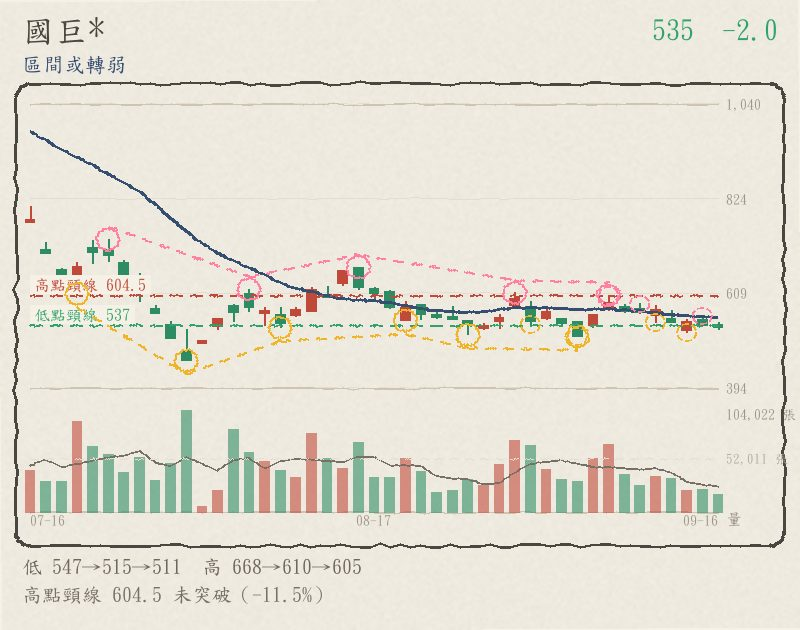
2026/09/16 12:30 盤中 535（-0.37%），相對加權指數 -1.34 個百分點；盤中累計成交值 93.49 億（全榜第 12 名，上市第 9 名）。以交易時間比例推估的今日成交量約為 20 日均量的 0.55 倍（量縮）。日線結構：區間或轉弱；現價在月線 556.05 之下（-3.8%）。距前一日（9/14）高點 -4.12%，距今日高點 -1.47%、距今日低點 +1.71%。圖為日線，最後一根是今日 12:30 為止的進行中 K 棒。
量縮
↑ 回上方清單
聯茂 6213 上市
552 +33.0（+6.36%）
區間或轉弱 盤中成交值 90.14 億・全榜第 13 名（上市第 10 名）・相對大盤 +5.39
好條件 5/8：站上月線、月線向上、相對大盤強、攻擊量（量增＋上漲）、守住今日高檔（距今日高點 1% 內）
不好條件 0/8：無
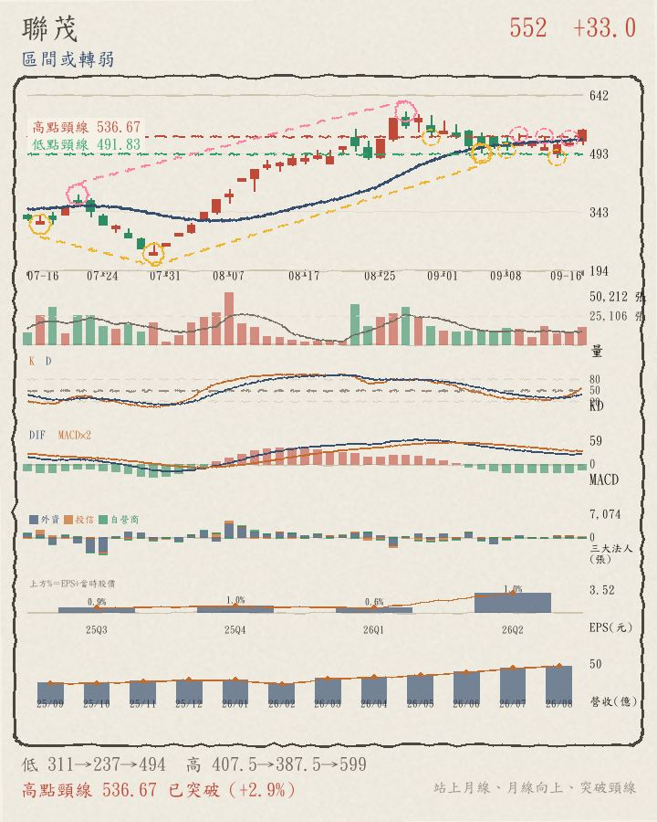
2026/09/16 12:30 盤中 552（+6.36%），相對加權指數 +5.39 個百分點；盤中累計成交值 90.14 億（全榜第 13 名，上市第 10 名）。以交易時間比例推估的今日成交量約為 20 日均量的 1.29 倍（量增）。日線結構：區間或轉弱；現價在月線 525.925 之上（+5.0%）。距前一日（9/14）高點 +3.95%，距今日高點 -0.54%、距今日低點 +7.39%。圖為日線，最後一根是今日 12:30 為止的進行中 K 棒。
↑ 回上方清單
全新 2455 上市
523 +3.0（+0.58%）
底部墊高、未過前高 盤中成交值 85.68 億・全榜第 14 名（上市第 11 名）・相對大盤 -0.39
好條件 4/8：站上月線、月線向上、底底高、攻擊量（量增＋上漲）
不好條件 1/8：相對大盤弱
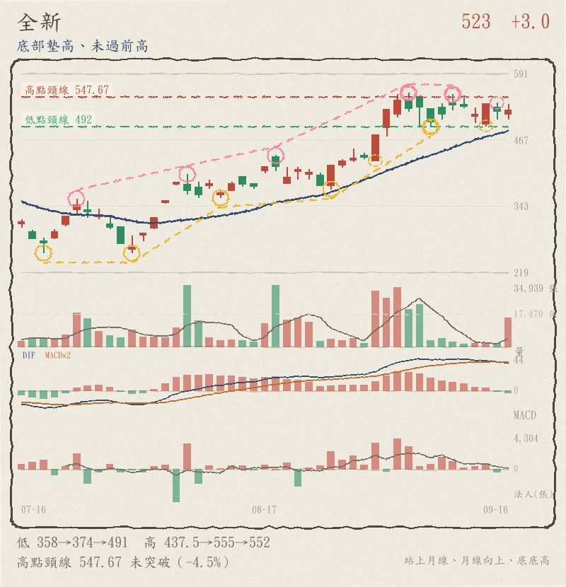
2026/09/16 12:30 盤中 523（+0.58%），相對加權指數 -0.39 個百分點；盤中累計成交值 85.68 億（全榜第 14 名，上市第 11 名）。以交易時間比例推估的今日成交量約為 20 日均量的 1.68 倍（爆量）。日線結構：底部墊高、未過前高；現價在月線 477.825 之上（+9.4%）。距前一日（9/14）高點 -2.43%，距今日高點 -2.06%、距今日低點 +3.36%。圖為日線，最後一根是今日 12:30 為止的進行中 K 棒。
↑ 回上方清單
臻鼎-KY 4958 上市
496.5 +19.0（+3.98%）
上升趨勢（底底高＋頭頭高） 盤中成交值 85.41 億・全榜第 15 名（上市第 12 名）・相對大盤 +3.01
好條件 6/8：站上月線、月線向上、底底高、頭頭高、相對大盤強、守住今日高檔（距今日高點 1% 內）
不好條件 0/8：無
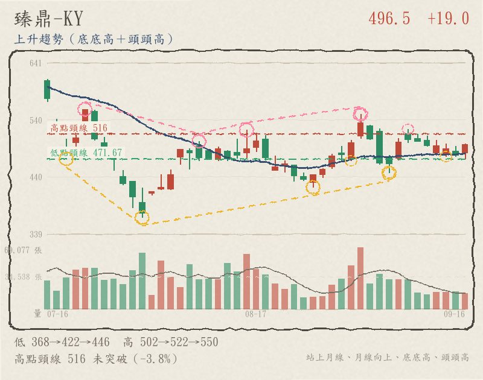
2026/09/16 12:30 盤中 496.5（+3.98%），相對加權指數 +3.01 個百分點；盤中累計成交值 85.41 億（全榜第 15 名，上市第 12 名）。以交易時間比例推估的今日成交量約為 20 日均量的 0.77 倍（量平）。日線結構：上升趨勢（底底高＋頭頭高）；現價在月線 479.225 之上（+3.6%）。距前一日（9/14）高點 +0.61%，距今日高點 -0.30%、距今日低點 +5.41%。圖為日線，最後一根是今日 12:30 為止的進行中 K 棒。
↑ 回上方清單
欣興 3037 上市
963 +12.0（+1.26%）
區間或轉弱 盤中成交值 82.45 億・全榜第 16 名（上市第 13 名）・相對大盤 +0.29
好條件 2/8：相對大盤強、守住今日高檔（距今日高點 1% 內）
不好條件 2/8：在月線之下、月線下彎
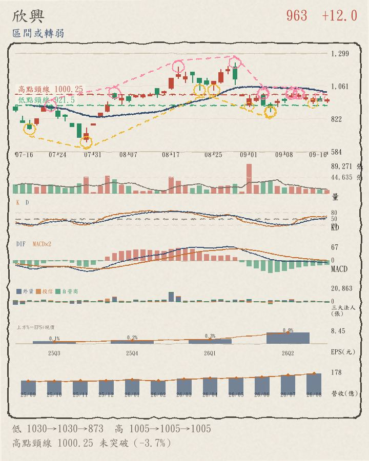
2026/09/16 12:30 盤中 963（+1.26%），相對加權指數 +0.29 個百分點；盤中累計成交值 82.45 億（全榜第 16 名，上市第 13 名）。以交易時間比例推估的今日成交量約為 20 日均量的 0.45 倍（量縮）。日線結構：區間或轉弱；現價在月線 1026.55 之下（-6.2%）。距前一日（9/14）高點 -2.33%，距今日高點 -0.82%、距今日低點 +2.45%。圖為日線，最後一根是今日 12:30 為止的進行中 K 棒。
量縮
↑ 回上方清單
南亞 1303 上市
226 +4.5（+2.03%）
底部墊高、未過前高 盤中成交值 78.79 億・全榜第 17 名（上市第 14 名）・相對大盤 +1.06
好條件 4/8：站上月線、月線向上、底底高、相對大盤強
不好條件 0/8：無
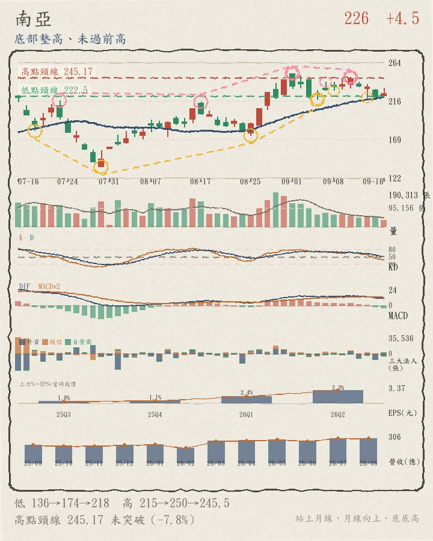
2026/09/16 12:30 盤中 226（+2.03%），相對加權指數 +1.06 個百分點；盤中累計成交值 78.79 億（全榜第 17 名，上市第 14 名）。以交易時間比例推估的今日成交量約為 20 日均量的 0.5 倍（量縮）。日線結構：底部墊高、未過前高；現價在月線 219.3 之上（+3.1%）。距前一日（9/14）高點 -1.95%，距今日高點 -2.59%、距今日低點 +1.57%。圖為日線，最後一根是今日 12:30 為止的進行中 K 棒。
↑ 回上方清單
台燿 6274 上櫃
1445 +75.0（+5.47%）
區間或轉弱 盤中成交值 77.61 億・全榜第 18 名（上櫃第 4 名）・相對大盤 +4.50
好條件 3/8：站上月線、相對大盤強、攻擊量（量增＋上漲）
不好條件 1/8：月線下彎
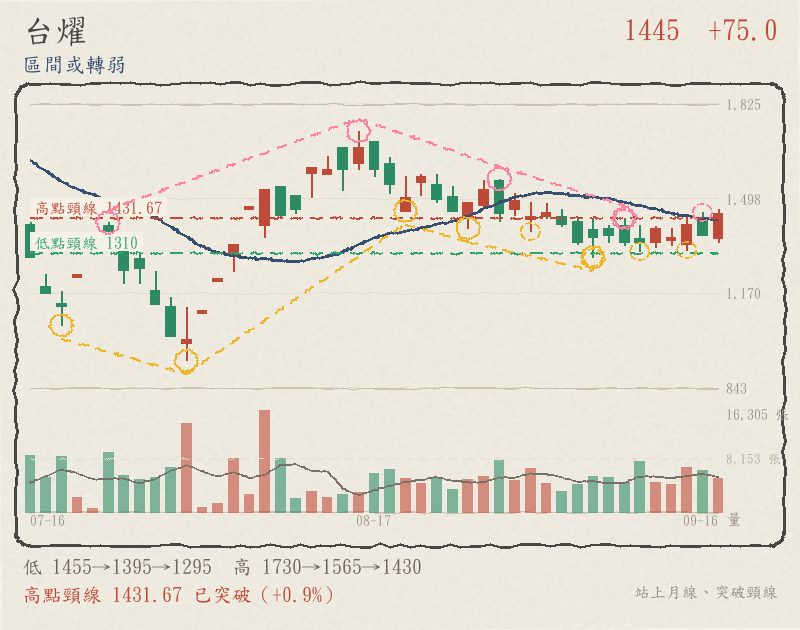
2026/09/16 12:30 盤中 1445（+5.47%），相對加權指數 +4.50 個百分點；盤中累計成交值 77.61 億（全榜第 18 名，上櫃第 4 名）。以交易時間比例推估的今日成交量約為 20 日均量的 1.26 倍（量增）。日線結構：區間或轉弱；現價在月線 1429 之上（+1.1%）。距前一日（9/14）高點 -0.34%，距今日高點 -1.03%、距今日低點 +7.43%。圖為日線，最後一根是今日 12:30 為止的進行中 K 棒。
↑ 回上方清單
金居 8358 上櫃
502 +20.0（+4.15%）
底部墊高、未過前高 盤中成交值 77.57 億・全榜第 19 名（上櫃第 5 名）・相對大盤 +3.18
好條件 4/8：站上月線、月線向上、底底高、相對大盤強
不好條件 0/8：無
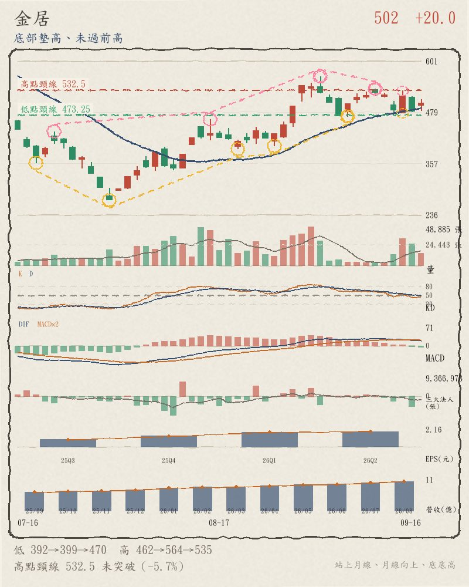
2026/09/16 12:30 盤中 502（+4.15%），相對加權指數 +3.18 個百分點；盤中累計成交值 77.57 億（全榜第 19 名，上櫃第 5 名）。以交易時間比例推估的今日成交量約為 20 日均量的 1.02 倍（量平）。日線結構：底部墊高、未過前高；現價在月線 484.925 之上（+3.5%）。距前一日（9/14）高點 -2.71%，距今日高點 -1.38%、距今日低點 +4.04%。圖為日線，最後一根是今日 12:30 為止的進行中 K 棒。
↑ 回上方清單
南電 8046 上市
1100 +15.0（+1.38%）
區間或轉弱 盤中成交值 70.89 億・全榜第 20 名（上市第 15 名）・相對大盤 +0.41
好條件 1/8：相對大盤強
不好條件 2/8：在月線之下、月線下彎
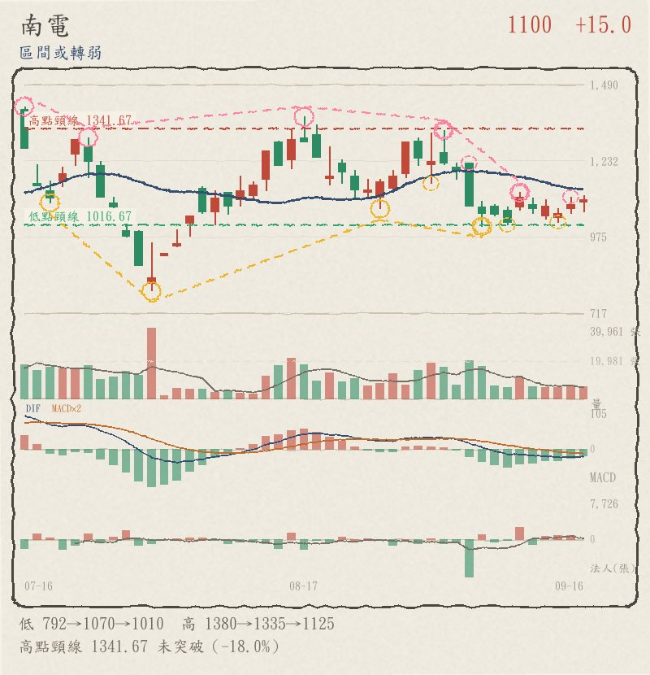
2026/09/16 12:30 盤中 1100（+1.38%），相對加權指數 +0.41 個百分點；盤中累計成交值 70.89 億（全榜第 20 名，上市第 15 名）。以交易時間比例推估的今日成交量約為 20 日均量的 0.73 倍（量平）。日線結構：區間或轉弱；現價在月線 1139.25 之下（-3.5%）。距前一日（9/14）高點 -0.90%，距今日高點 -1.35%、距今日低點 +3.77%。圖為日線，最後一根是今日 12:30 為止的進行中 K 棒。
量平
↑ 回上方清單
景碩 3189 上市
826 +31.0（+3.90%）
區間或轉弱 盤中成交值 66.29 億・全榜第 21 名（上市第 16 名）・相對大盤 +2.93
好條件 2/8：相對大盤強、守住今日高檔（距今日高點 1% 內）
不好條件 2/8：在月線之下、月線下彎
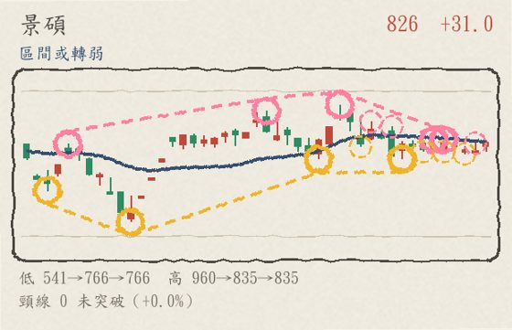
2026/09/16 12:30 盤中 826（+3.90%），相對加權指數 +2.93 個百分點；盤中累計成交值 66.29 億（全榜第 21 名，上市第 16 名）。以交易時間比例推估的今日成交量約為 20 日均量的 0.55 倍（量縮）。日線結構：區間或轉弱；現價在月線 831.75 之下（-0.7%）。距前一日（9/14）高點 +0.49%，距今日高點 -0.72%、距今日低點 +4.29%。圖為日線，最後一根是今日 12:30 為止的進行中 K 棒。
量縮
↑ 回上方清單
友達 2409 上市
29.15 +1.2（+4.48%）
區間或轉弱 盤中成交值 61.68 億・全榜第 22 名（上市第 17 名）・相對大盤 +3.51
好條件 4/8：站上月線、月線向上、相對大盤強、攻擊量（量增＋上漲）
不好條件 0/8：無
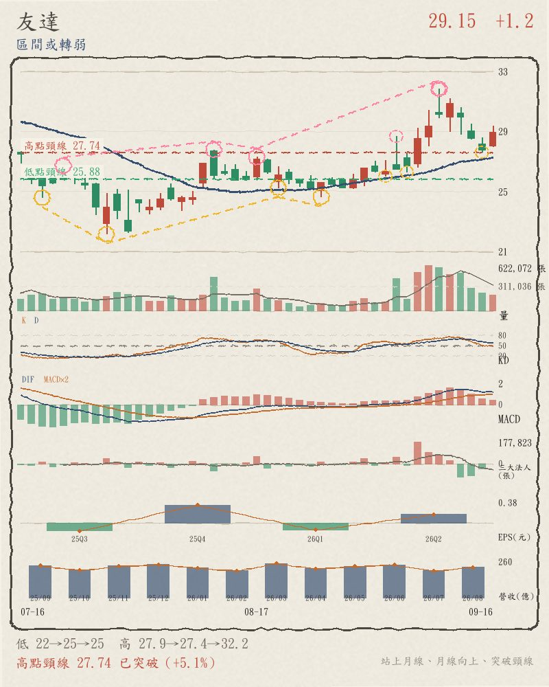
2026/09/16 12:30 盤中 29.15（+4.48%），相對加權指數 +3.51 個百分點；盤中累計成交值 61.68 億（全榜第 22 名，上市第 17 名）。以交易時間比例推估的今日成交量約為 20 日均量的 1.11 倍（量增）。日線結構：區間或轉弱；現價在月線 27.232 之上（+7.0%）。距前一日（9/14）高點 +1.39%，距今日高點 -1.52%、距今日低點 +3.55%。圖為日線，最後一根是今日 12:30 為止的進行中 K 棒。
↑ 回上方清單
健策 3653 上市
5280 -30.0（-0.56%）
底部墊高、未過前高 盤中成交值 60.72 億・全榜第 23 名（上市第 18 名）・相對大盤 -1.53
好條件 2/8：月線向上、底底高
不好條件 5/8：跌破前低、今日下跌、相對大盤弱、在月線之下、貼近今日低點（1% 內）
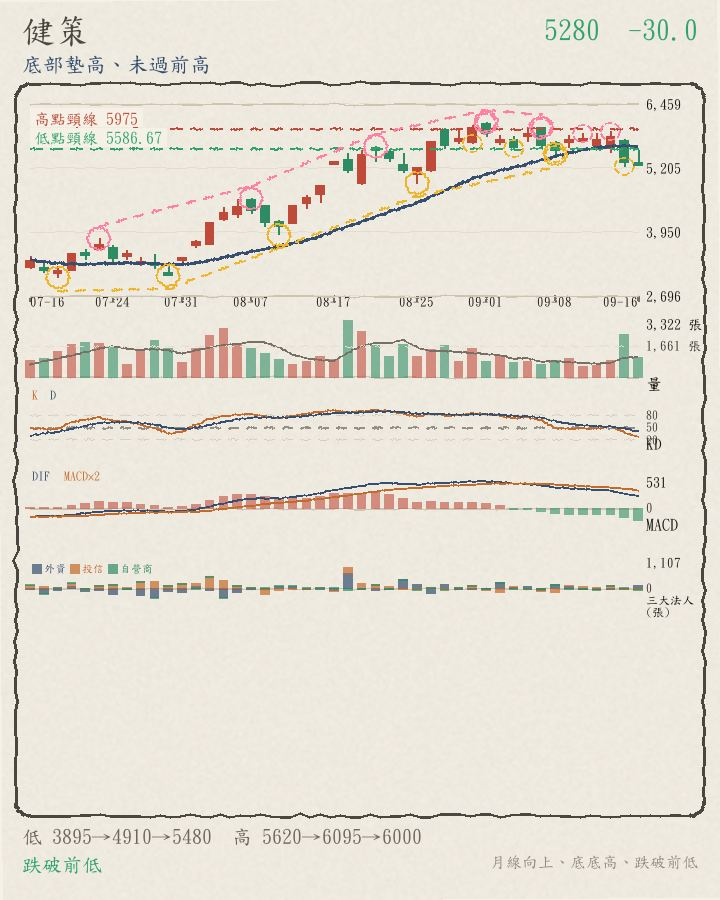
2026/09/16 12:30 盤中 5280（-0.56%），相對加權指數 -1.53 個百分點；盤中累計成交值 60.72 億（全榜第 23 名，上市第 18 名）。以交易時間比例推估的今日成交量約為 20 日均量的 1.09 倍（量平）。日線結構：底部墊高、未過前高；現價在月線 5637.75 之下（-6.3%）。距前一日（9/14）高點 -8.41%，距今日高點 -4.69%、距今日低點 +0.19%。圖為日線，最後一根是今日 12:30 為止的進行中 K 棒。
↑ 回上方清單
創意 3443 上市
6265 +230.0（+3.81%）
高點墊高、底部不穩 盤中成交值 56.95 億・全榜第 24 名（上市第 19 名）・相對大盤 +2.84
好條件 5/8：站上月線、月線向上、頭頭高、相對大盤強、守住今日高檔（距今日高點 1% 內）
不好條件 0/8：無
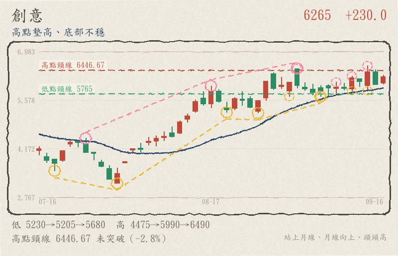
2026/09/16 12:30 盤中 6265（+3.81%），相對加權指數 +2.84 個百分點；盤中累計成交值 56.95 億（全榜第 24 名，上市第 19 名）。以交易時間比例推估的今日成交量約為 20 日均量的 0.6 倍（量縮）。日線結構：高點墊高、底部不穩；現價在月線 5886 之上（+6.4%）。距前一日（9/14）高點 -2.94%，距今日高點 -0.48%、距今日低點 +3.55%。圖為日線，最後一根是今日 12:30 為止的進行中 K 棒。
↑ 回上方清單
奇鋐 3017 上市
3195 +80.0（+2.57%）
上升趨勢（底底高＋頭頭高） 盤中成交值 54.19 億・全榜第 25 名（上市第 20 名）・相對大盤 +1.60
好條件 5/8：月線向上、底底高、頭頭高、相對大盤強、守住今日高檔（距今日高點 1% 內）
不好條件 2/8：跌破前低、在月線之下
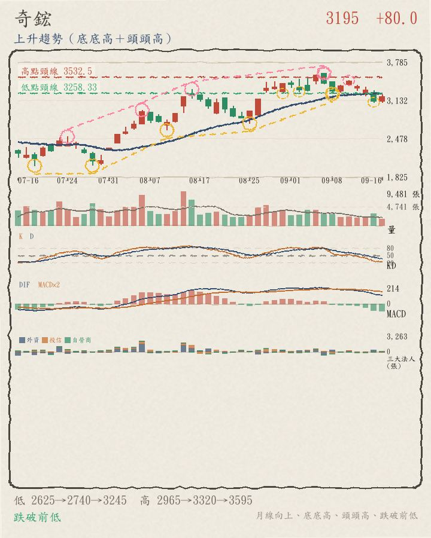
2026/09/16 12:30 盤中 3195（+2.57%），相對加權指數 +1.60 個百分點；盤中累計成交值 54.19 億（全榜第 25 名，上市第 20 名）。以交易時間比例推估的今日成交量約為 20 日均量的 0.67 倍（量縮）。日線結構：上升趨勢（底底高＋頭頭高）；現價在月線 3248 之下（-1.6%）。距前一日（9/14）高點 -3.18%，距今日高點 -0.93%、距今日低點 +3.06%。圖為日線，最後一根是今日 12:30 為止的進行中 K 棒。
↑ 回上方清單
信昌電 6173 上櫃
311 +16.5（+5.60%）
上升趨勢（底底高＋頭頭高） 盤中成交值 53.28 億・全榜第 26 名（上櫃第 6 名）・相對大盤 +4.63
好條件 8/8：站上月線、月線向上、底底高、頭頭高、突破頸線、相對大盤強、攻擊量（量增＋上漲）、守住今日高檔（距今日高點 1% 內）
不好條件 0/8：無
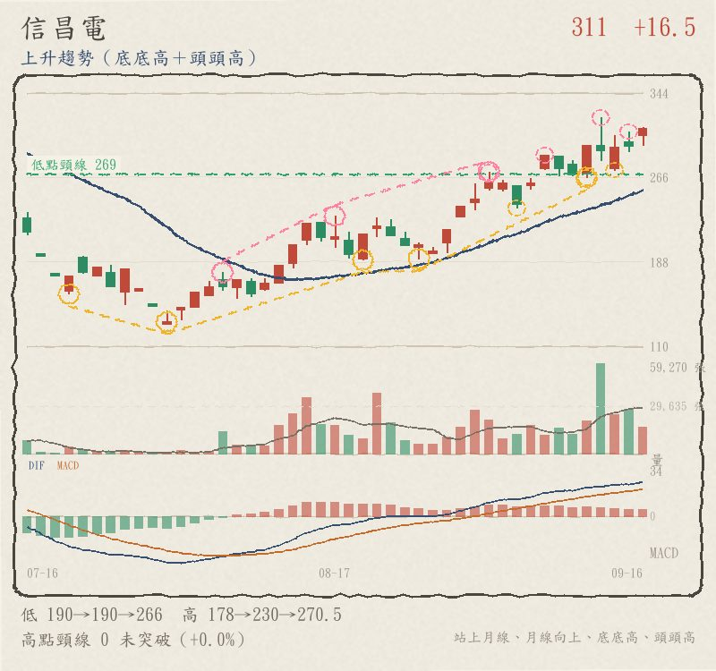
2026/09/16 12:30 盤中 311（+5.60%），相對加權指數 +4.63 個百分點；盤中累計成交值 53.28 億（全榜第 26 名，上櫃第 6 名）。以交易時間比例推估的今日成交量約為 20 日均量的 1.19 倍（量增）。日線結構：上升趨勢（底底高＋頭頭高）；現價在月線 248.925 之上（+24.9%）。距前一日（9/14）高點 +0.97%，距今日高點 -0.32%、距今日低點 +5.42%。圖為日線，最後一根是今日 12:30 為止的進行中 K 棒。
↑ 回上方清單
緯穎 6669 上市
2265 -50.0（-2.16%）
上升趨勢（底底高＋頭頭高） 盤中成交值 53.16 億・全榜第 27 名（上市第 21 名）・相對大盤 -3.13
好條件 4/8：月線向上、底底高、頭頭高、突破頸線
不好條件 3/8：今日下跌、相對大盤弱、在月線之下
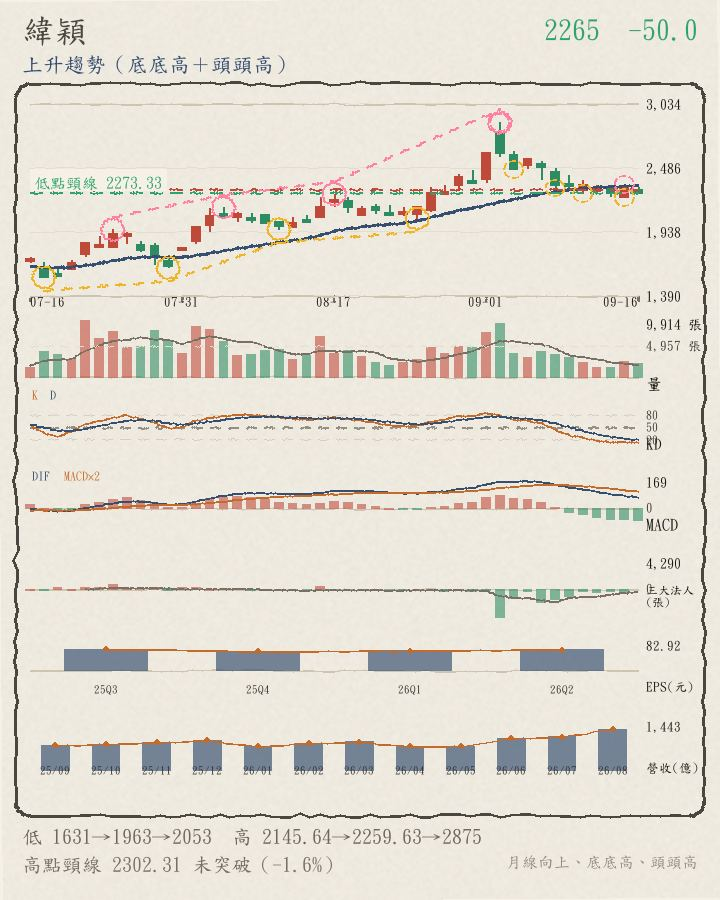
2026/09/16 12:30 盤中 2265（-2.16%），相對加權指數 -3.13 個百分點；盤中累計成交值 53.16 億（全榜第 27 名，上市第 21 名）。以交易時間比例推估的今日成交量約為 20 日均量的 0.75 倍（量平）。日線結構：上升趨勢（底底高＋頭頭高）；現價在月線 2331.89 之下（-2.9%）。距前一日（9/14）高點 -3.41%，距今日高點 -2.37%、距今日低點 +0.00%。圖為日線，最後一根是今日 12:30 為止的進行中 K 棒。
↑ 回上方清單
鼎元 2426 上市
99.8 +9.0（+9.91%）
高點墊高、底部不穩 盤中成交值 49.74 億・全榜第 28 名（上市第 22 名）・相對大盤 +8.94
好條件 6/8：站上月線、月線向上、頭頭高、突破頸線、相對大盤強、攻擊量（量增＋上漲）
不好條件 0/8：無
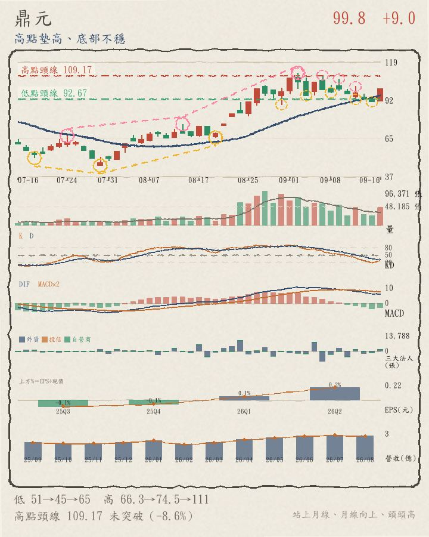
2026/09/16 12:30 盤中 99.8（+9.91%），相對加權指數 +8.94 個百分點；盤中累計成交值 49.74 億（全榜第 28 名，上市第 22 名）。以交易時間比例推估的今日成交量約為 20 日均量的 1.2 倍（量增）。日線結構：高點墊高、底部不穩；現價在月線 93.68 之上（+6.5%）。距前一日（9/14）高點 +5.61%，距今日高點 +0.00%、距今日低點 +9.79%。圖為日線，最後一根是今日 12:30 為止的進行中 K 棒。
↑ 回上方清單
台光電 2383 上市
5140 +25.0（+0.49%）
區間或轉弱 盤中成交值 48.01 億・全榜第 29 名（上市第 23 名）・相對大盤 -0.48
好條件 1/8：守住今日高檔（距今日高點 1% 內）
不好條件 4/8：跌破前低、相對大盤弱、在月線之下、月線下彎
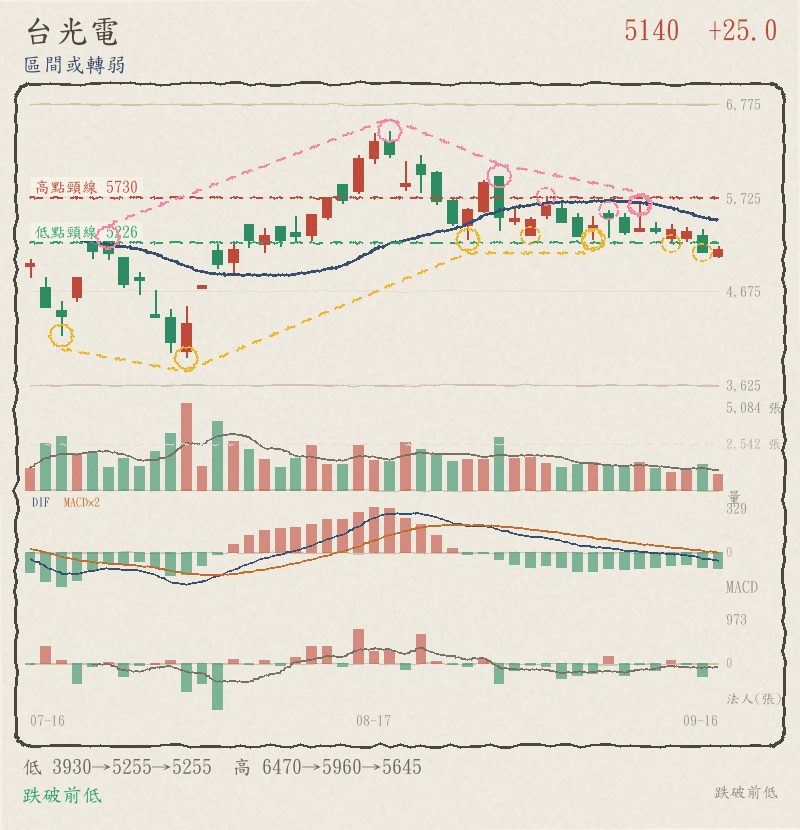
2026/09/16 12:30 盤中 5140（+0.49%），相對加權指數 -0.48 個百分點；盤中累計成交值 48.01 億（全榜第 29 名，上市第 23 名）。以交易時間比例推估的今日成交量約為 20 日均量的 0.69 倍（量縮）。日線結構：區間或轉弱；現價在月線 5507 之下（-6.7%）。距前一日（9/14）高點 -4.19%，距今日高點 -0.68%、距今日低點 +1.68%。圖為日線，最後一根是今日 12:30 為止的進行中 K 棒。
↑ 回上方清單
力積電 6770 上市
69.7 +2.8（+4.19%）
上升趨勢（底底高＋頭頭高） 盤中成交值 47.05 億・全榜第 30 名（上市第 24 名）・相對大盤 +3.22
好條件 4/8：底底高、頭頭高、相對大盤強、守住今日高檔（距今日高點 1% 內）
不好條件 2/8：在月線之下、月線下彎
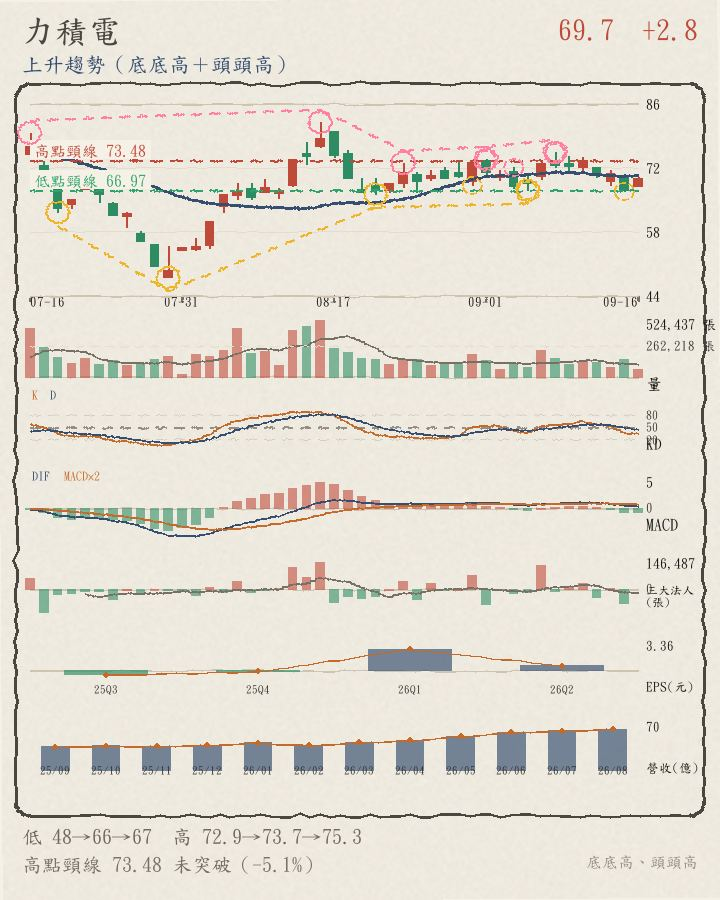
2026/09/16 12:30 盤中 69.7（+4.19%），相對加權指數 +3.22 個百分點；盤中累計成交值 47.05 億（全榜第 30 名，上市第 24 名）。以交易時間比例推估的今日成交量約為 20 日均量的 0.6 倍（量縮）。日線結構：上升趨勢（底底高＋頭頭高）；現價在月線 70.095 之下（-0.6%）。距前一日（9/14）高點 -0.57%，距今日高點 -0.29%、距今日低點 +2.80%。圖為日線，最後一根是今日 12:30 為止的進行中 K 棒。
↑ 回上方清單
聯鈞 3450 上市
541 +48.5（+9.85%）
高點墊高、底部不穩 盤中成交值 45.04 億・全榜第 31 名（上市第 25 名）・相對大盤 +8.88
好條件 2/8：頭頭高、相對大盤強
不好條件 2/8：在月線之下、月線下彎
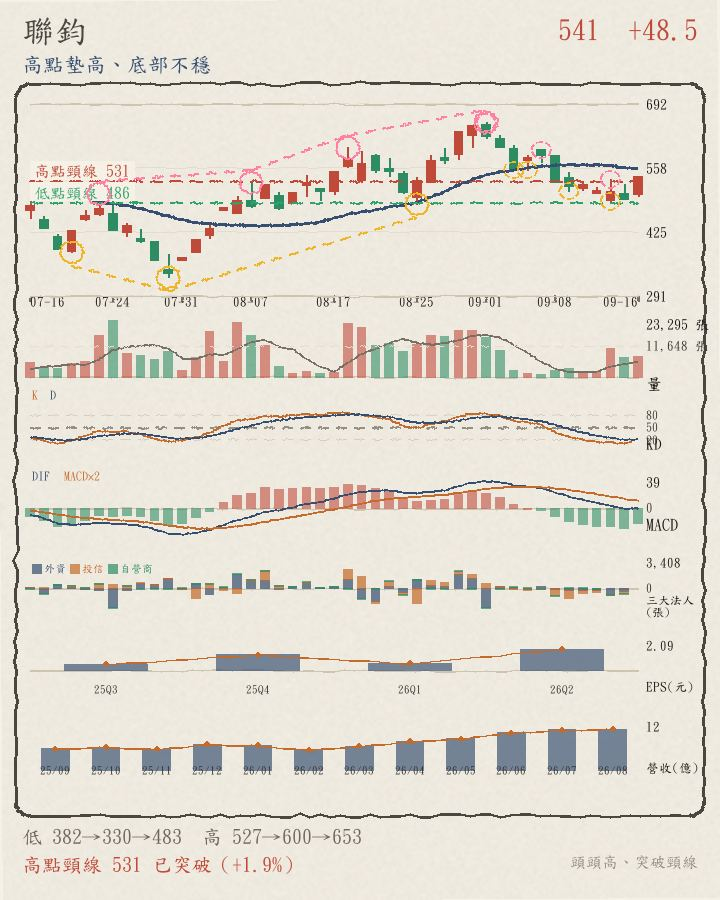
2026/09/16 12:30 盤中 541（+9.85%），相對加權指數 +8.88 個百分點；盤中累計成交值 45.04 億（全榜第 31 名，上市第 25 名）。以交易時間比例推估的今日成交量約為 20 日均量的 0.98 倍（量平）。日線結構：高點墊高、底部不穩；現價在月線 558.675 之下（-3.2%）。距前一日（9/14）高點 +3.24%，距今日高點 +0.00%、距今日低點 +8.53%。圖為日線，最後一根是今日 12:30 為止的進行中 K 棒。
↑ 回上方清單
富喬 1815 上櫃
118 +3.5（+3.06%）
區間或轉弱 盤中成交值 41.98 億・全榜第 32 名（上櫃第 7 名）・相對大盤 +2.09
好條件 4/8：站上月線、月線向上、突破頸線、相對大盤強
不好條件 0/8：無
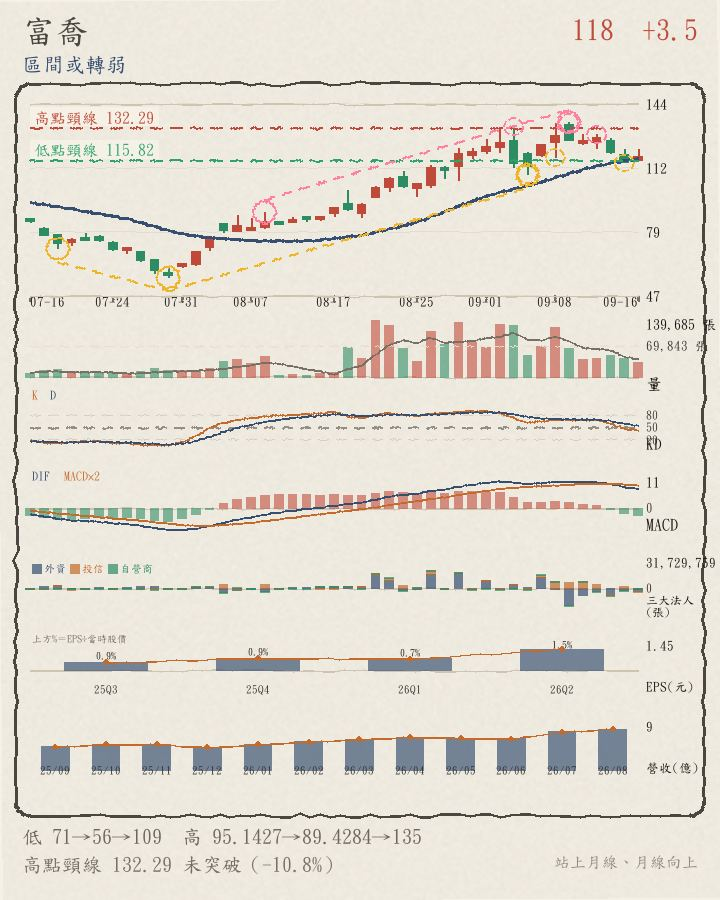
2026/09/16 12:30 盤中 118（+3.06%），相對加權指數 +2.09 個百分點；盤中累計成交值 41.98 億（全榜第 32 名，上櫃第 7 名）。以交易時間比例推估的今日成交量約為 20 日均量的 0.54 倍（量縮）。日線結構：區間或轉弱；現價在月線 115.628 之上（+2.0%）。距前一日（9/14）高點 -2.88%，距今日高點 -2.88%、距今日低點 +2.16%。圖為日線，最後一根是今日 12:30 為止的進行中 K 棒。
↑ 回上方清單
精材 3374 上櫃
424 +15.5（+3.79%）
區間或轉弱 盤中成交值 39.77 億・全榜第 33 名（上櫃第 8 名）・相對大盤 +2.82
好條件 4/8：站上月線、月線向上、突破頸線、相對大盤強
不好條件 0/8：無
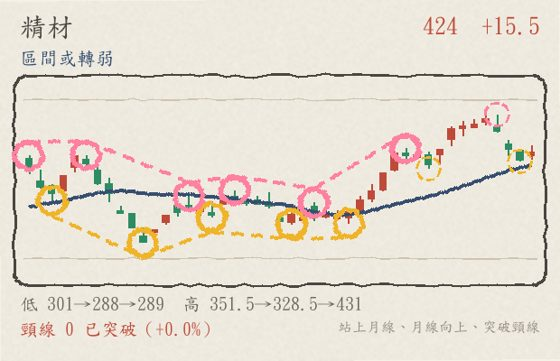
2026/09/16 12:30 盤中 424（+3.79%），相對加權指數 +2.82 個百分點；盤中累計成交值 39.77 億（全榜第 33 名，上櫃第 8 名）。以交易時間比例推估的今日成交量約為 20 日均量的 0.84 倍（量平）。日線結構：區間或轉弱；現價在月線 394.95 之上（+7.4%）。距前一日（9/14）高點 -1.51%，距今日高點 -2.75%、距今日低點 +3.29%。圖為日線，最後一根是今日 12:30 為止的進行中 K 棒。
↑ 回上方清單
禾伸堂 3026 上市
757 +31.0（+4.27%）
高點墊高、底部不穩 盤中成交值 39.11 億・全榜第 34 名（上市第 26 名）・相對大盤 +3.30
好條件 5/8：站上月線、月線向上、頭頭高、相對大盤強、守住今日高檔（距今日高點 1% 內）
不好條件 0/8：無
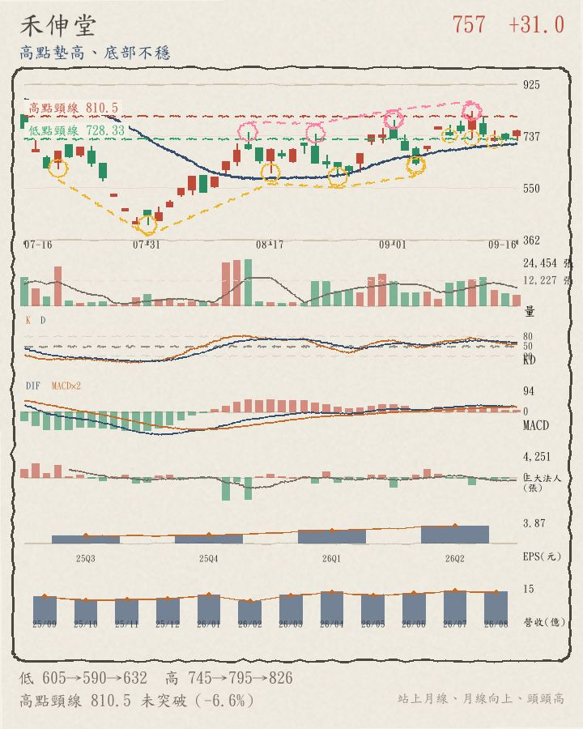
2026/09/16 12:30 盤中 757（+4.27%），相對加權指數 +3.30 個百分點；盤中累計成交值 39.11 億（全榜第 34 名，上市第 26 名）。以交易時間比例推估的今日成交量約為 20 日均量的 0.73 倍（量平）。日線結構：高點墊高、底部不穩；現價在月線 705.95 之上（+7.2%）。距前一日（9/14）高點 +1.07%，距今日高點 -0.26%、距今日低點 +5.14%。圖為日線，最後一根是今日 12:30 為止的進行中 K 棒。
↑ 回上方清單
世芯-KY 3661 上市
3390 +35.0（+1.04%）
區間或轉弱 盤中成交值 38.92 億・全榜第 35 名（上市第 27 名）・相對大盤 +0.07
好條件 2/8：相對大盤強、守住今日高檔（距今日高點 1% 內）
不好條件 3/8：跌破前低、在月線之下、月線下彎
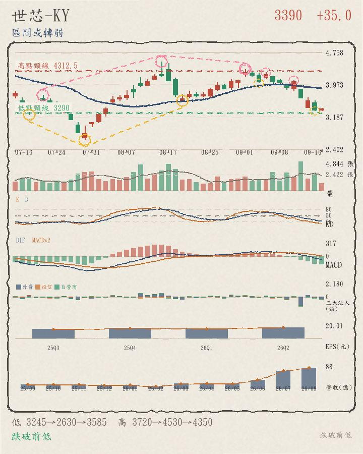
2026/09/16 12:30 盤中 3390（+1.04%），相對加權指數 +0.07 個百分點；盤中累計成交值 38.92 億（全榜第 35 名，上市第 27 名）。以交易時間比例推估的今日成交量約為 20 日均量的 0.71 倍（量平）。日線結構：區間或轉弱；現價在月線 3901 之下（-13.1%）。距前一日（9/14）高點 -5.57%，距今日高點 -0.29%、距今日低點 +1.65%。圖為日線，最後一根是今日 12:30 為止的進行中 K 棒。
↑ 回上方清單
玉晶光 3406 上市
1005 +90.0（+9.84%）
上升趨勢（底底高＋頭頭高） 盤中成交值 38.05 億・全榜第 36 名（上市第 28 名）・相對大盤 +8.87
好條件 5/8：站上月線、月線向上、底底高、頭頭高、相對大盤強
不好條件 0/8：無
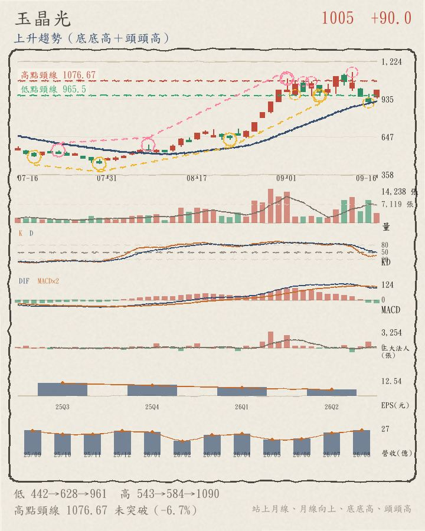
2026/09/16 12:30 盤中 1005（+9.84%），相對加權指數 +8.87 個百分點；盤中累計成交值 38.05 億（全榜第 36 名，上市第 28 名）。以交易時間比例推估的今日成交量約為 20 日均量的 0.82 倍（量平）。日線結構：上升趨勢（底底高＋頭頭高）；現價在月線 901.4 之上（+11.5%）。距前一日（9/14）高點 +3.29%，距今日高點 +0.00%、距今日低點 +6.80%。圖為日線，最後一根是今日 12:30 為止的進行中 K 棒。
↑ 回上方清單
金像電 2368 上市
999 +27.0（+2.78%）
底部墊高、未過前高 盤中成交值 37.9 億・全榜第 37 名（上市第 29 名）・相對大盤 +1.81
好條件 3/8：月線向上、底底高、相對大盤強
不好條件 2/8：跌破前低、在月線之下
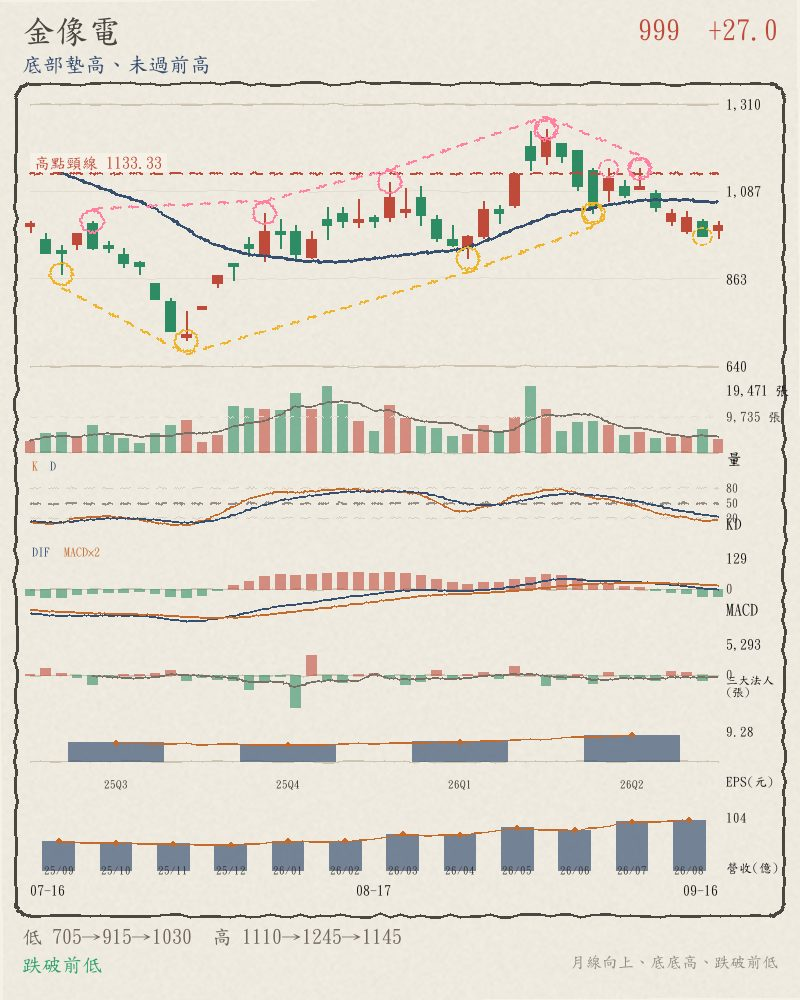
2026/09/16 12:30 盤中 999（+2.78%），相對加權指數 +1.81 個百分點；盤中累計成交值 37.9 億（全榜第 37 名，上市第 29 名）。以交易時間比例推估的今日成交量約為 20 日均量的 0.61 倍（量縮）。日線結構：底部墊高、未過前高；現價在月線 1061.05 之下（-5.8%）。距前一日（9/14）高點 -1.58%，距今日高點 -1.09%、距今日低點 +3.42%。圖為日線，最後一根是今日 12:30 為止的進行中 K 棒。
↑ 回上方清單
雙鴻 3324 上櫃
1330 +70.0（+5.56%）
區間或轉弱 盤中成交值 37.56 億・全榜第 38 名（上櫃第 9 名）・相對大盤 +4.59
好條件 4/8：站上月線、月線向上、相對大盤強、攻擊量（量增＋上漲）
不好條件 0/8：無
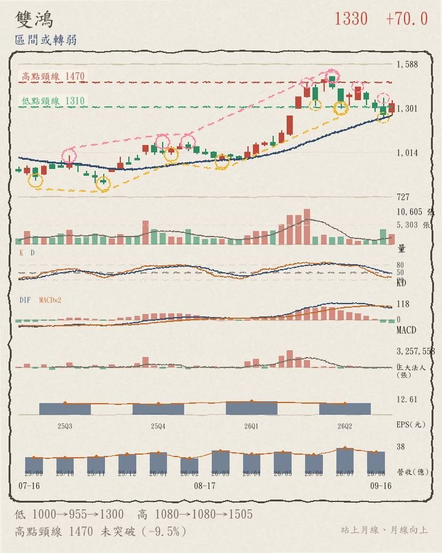
2026/09/16 12:30 盤中 1330（+5.56%），相對加權指數 +4.59 個百分點；盤中累計成交值 37.56 億（全榜第 38 名，上櫃第 9 名）。以交易時間比例推估的今日成交量約為 20 日均量的 1.1 倍（量增）。日線結構：區間或轉弱；現價在月線 1236.55 之上（+7.6%）。距前一日（9/14）高點 -2.56%，距今日高點 -1.48%、距今日低點 +5.98%。圖為日線，最後一根是今日 12:30 為止的進行中 K 棒。
↑ 回上方清單
環球晶 6488 上櫃
912 -2.0（-0.22%）
區間或轉弱 盤中成交值 35.96 億・全榜第 39 名（上櫃第 10 名）・相對大盤 -1.19
好條件 0/8：無
不好條件 5/8：今日下跌、相對大盤弱、在月線之下、貼近今日低點（1% 內）、月線下彎
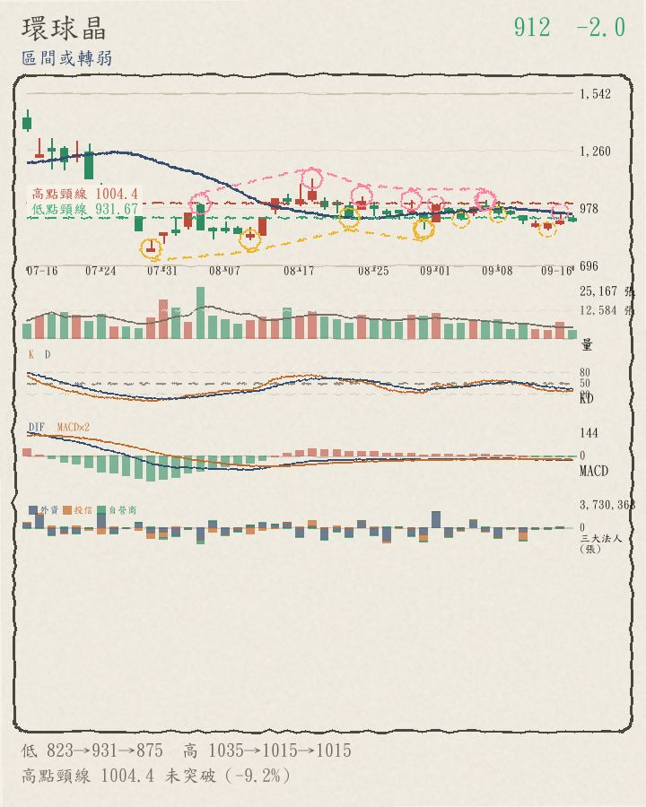
2026/09/16 12:30 盤中 912（-0.22%），相對加權指數 -1.19 個百分點；盤中累計成交值 35.96 億（全榜第 39 名，上櫃第 10 名）。以交易時間比例推估的今日成交量約為 20 日均量的 0.59 倍（量縮）。日線結構：區間或轉弱；現價在月線 954.05 之下（-4.4%）。距前一日（9/14）高點 -4.90%，距今日高點 -2.98%、距今日低點 +0.22%。圖為日線，最後一根是今日 12:30 為止的進行中 K 棒。
量縮
↑ 回上方清單
合晶 6182 上櫃
110.5 +5.0（+4.74%）
區間或轉弱 盤中成交值 35.94 億・全榜第 40 名（上櫃第 11 名）・相對大盤 +3.77
好條件 2/8：站上月線、相對大盤強
不好條件 1/8：月線下彎
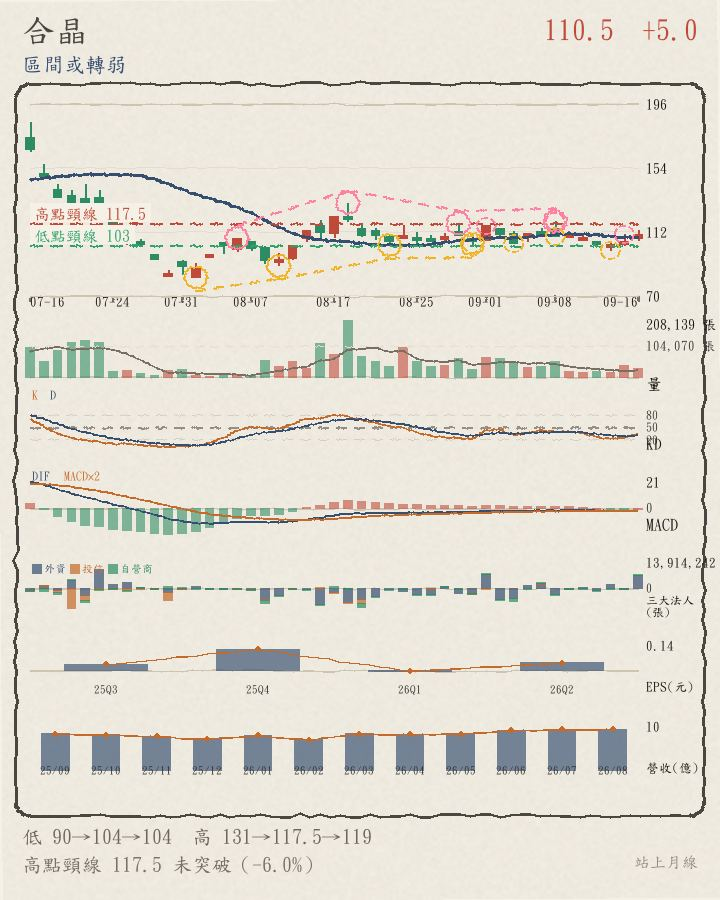
2026/09/16 12:30 盤中 110.5（+4.74%），相對加權指數 +3.77 個百分點；盤中累計成交值 35.94 億（全榜第 40 名，上櫃第 11 名）。以交易時間比例推估的今日成交量約為 20 日均量的 0.74 倍（量平）。日線結構：區間或轉弱；現價在月線 108.5 之上（+1.8%）。距前一日（9/14）高點 +0.00%，距今日高點 -2.21%、距今日低點 +3.76%。圖為日線，最後一根是今日 12:30 為止的進行中 K 棒。
↑ 回上方清單
群聯 8299 上櫃
1950 +30.0（+1.56%）
底部墊高、未過前高 盤中成交值 35.74 億・全榜第 41 名（上櫃第 12 名）・相對大盤 +0.59
好條件 3/8：底底高、相對大盤強、守住今日高檔（距今日高點 1% 內）
不好條件 3/8：跌破前低、在月線之下、月線下彎
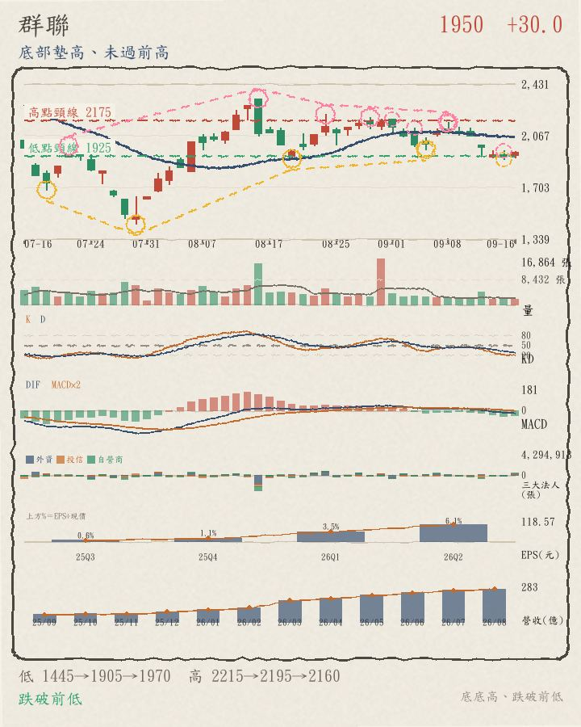
2026/09/16 12:30 盤中 1950（+1.56%），相對加權指數 +0.59 個百分點；盤中累計成交值 35.74 億（全榜第 41 名，上櫃第 12 名）。以交易時間比例推估的今日成交量約為 20 日均量的 0.58 倍（量縮）。日線結構：底部墊高、未過前高；現價在月線 2061.5 之下（-5.4%）。距前一日（9/14）高點 -0.51%，距今日高點 -0.26%、距今日低點 +2.09%。圖為日線，最後一根是今日 12:30 為止的進行中 K 棒。
↑ 回上方清單
聯一光 3441 上櫃
186 +16.5（+9.73%）
上升趨勢（底底高＋頭頭高） 盤中成交值 34.81 億・全榜第 42 名（上櫃第 13 名）・相對大盤 +8.76
好條件 7/8：站上月線、月線向上、底底高、頭頭高、突破頸線、相對大盤強、攻擊量（量增＋上漲）
不好條件 0/8：無
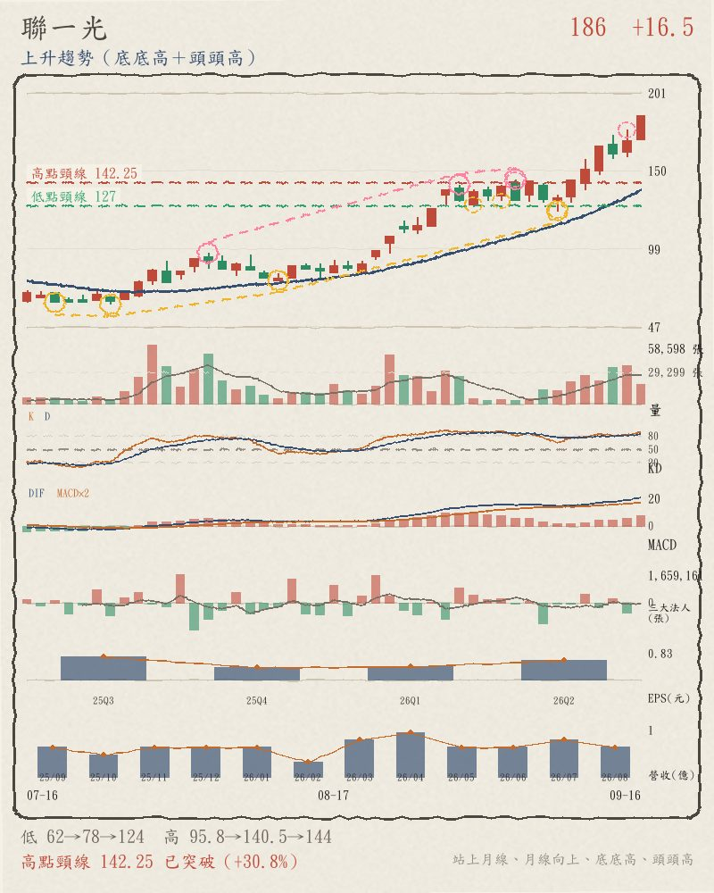
2026/09/16 12:30 盤中 186（+9.73%），相對加權指數 +8.76 個百分點；盤中累計成交值 34.81 億（全榜第 42 名，上櫃第 13 名）。以交易時間比例推估的今日成交量約為 20 日均量的 1.3 倍（量增）。日線結構：上升趨勢（底底高＋頭頭高）；現價在月線 132.34 之上（+40.5%）。距前一日（9/14）高點 +5.38%，距今日高點 +0.00%、距今日低點 +9.41%。圖為日線，最後一根是今日 12:30 為止的進行中 K 棒。
↑ 回上方清單
貿聯-KY 3665 上市
2000 +20.0（+1.01%）
區間或轉弱 盤中成交值 32.38 億・全榜第 43 名（上市第 30 名）・相對大盤 +0.04
好條件 1/8：相對大盤強
不好條件 2/8：在月線之下、月線下彎
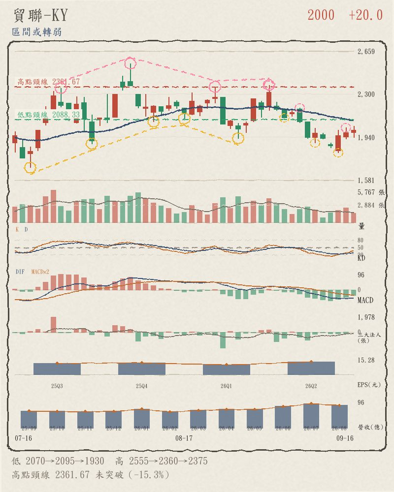
2026/09/16 12:30 盤中 2000（+1.01%），相對加權指數 +0.04 個百分點；盤中累計成交值 32.38 億（全榜第 43 名，上市第 30 名）。以交易時間比例推估的今日成交量約為 20 日均量的 0.77 倍（量平）。日線結構：區間或轉弱；現價在月線 2089.5 之下（-4.3%）。距前一日（9/14）高點 -0.99%，距今日高點 -1.48%、距今日低點 +3.36%。圖為日線，最後一根是今日 12:30 為止的進行中 K 棒。
量平
↑ 回上方清單
川湖 2059 上市
12240 +525.0（+4.48%）
區間或轉弱 盤中成交值 32.31 億・全榜第 44 名（上市第 31 名）・相對大盤 +3.51
好條件 1/8：相對大盤強
不好條件 3/8：跌破前低、在月線之下、月線下彎
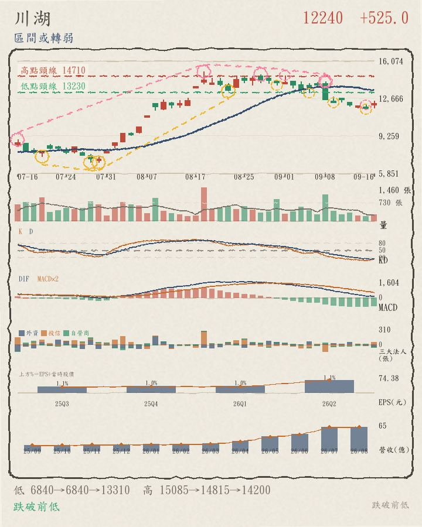
2026/09/16 12:30 盤中 12240（+4.48%），相對加權指數 +3.51 個百分點；盤中累計成交值 32.31 億（全榜第 44 名，上市第 31 名）。以交易時間比例推估的今日成交量約為 20 日均量的 0.63 倍（量縮）。日線結構：區間或轉弱；現價在月線 13498.2 之下（-9.3%）。距前一日（9/14）高點 +1.37%，距今日高點 -1.65%、距今日低點 +3.73%。圖為日線，最後一根是今日 12:30 為止的進行中 K 棒。
↑ 回上方清單
雍智科技 6683 上櫃
1595 +145.0（+10.00%）
高點墊高、底部不穩 盤中成交值 32.23 億・全榜第 45 名（上櫃第 14 名）・相對大盤 +9.03
好條件 6/8：站上月線、月線向上、頭頭高、突破頸線、相對大盤強、攻擊量（量增＋上漲）
不好條件 0/8：無
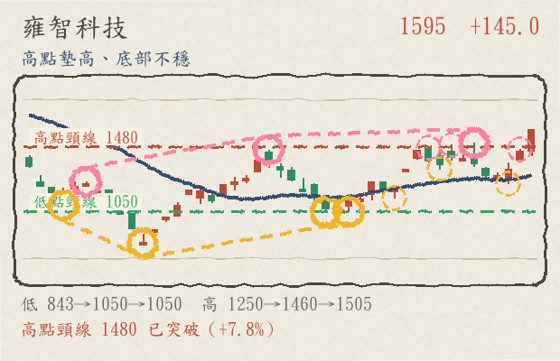
2026/09/16 12:30 盤中 1595（+10.00%），相對加權指數 +9.03 個百分點；盤中累計成交值 32.23 億（全榜第 45 名，上櫃第 14 名）。以交易時間比例推估的今日成交量約為 20 日均量的 3.21 倍（爆量）。日線結構：高點墊高、底部不穩；現價在月線 1274.75 之上（+25.1%）。距前一日（9/14）高點 +8.87%，距今日高點 +0.00%、距今日低點 +12.32%。圖為日線，最後一根是今日 12:30 為止的進行中 K 棒。
↑ 回上方清單
華新科 2492 上市
302.5 +2.5（+0.83%）
底部墊高、未過前高 盤中成交值 31.61 億・全榜第 46 名（上市第 32 名）・相對大盤 -0.14
好條件 3/8：站上月線、月線向上、底底高
不好條件 1/8：相對大盤弱
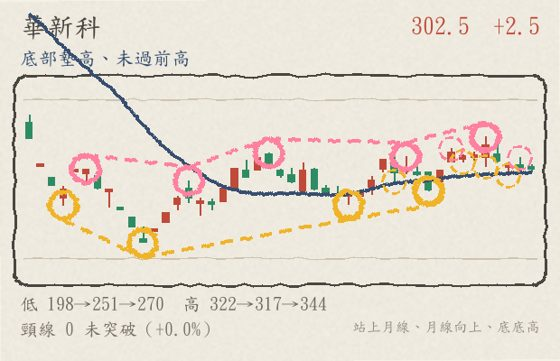
2026/09/16 12:30 盤中 302.5（+0.83%），相對加權指數 -0.14 個百分點；盤中累計成交值 31.61 億（全榜第 46 名，上市第 32 名）。以交易時間比例推估的今日成交量約為 20 日均量的 0.42 倍（量縮）。日線結構：底部墊高、未過前高；現價在月線 295.5 之上（+2.4%）。距前一日（9/14）高點 -4.12%，距今日高點 -1.14%、距今日低點 +2.37%。圖為日線，最後一根是今日 12:30 為止的進行中 K 棒。
↑ 回上方清單
華通 2313 上市
223.5 +5.0（+2.29%）
底部墊高、未過前高 盤中成交值 30.84 億・全榜第 47 名（上市第 33 名）・相對大盤 +1.32
好條件 5/8：月線向上、底底高、突破頸線、相對大盤強、守住今日高檔（距今日高點 1% 內）
不好條件 1/8：在月線之下
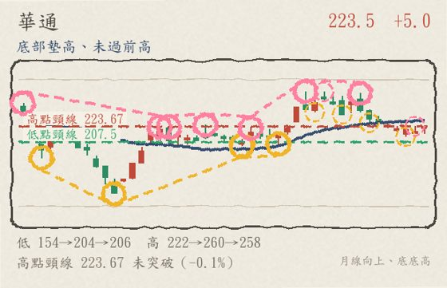
2026/09/16 12:30 盤中 223.5（+2.29%），相對加權指數 +1.32 個百分點；盤中累計成交值 30.84 億（全榜第 47 名，上市第 33 名）。以交易時間比例推估的今日成交量約為 20 日均量的 0.53 倍（量縮）。日線結構：底部墊高、未過前高；現價在月線 229.8 之下（-2.7%）。距前一日（9/14）高點 -0.22%，距今日高點 -0.45%、距今日低點 +3.47%。圖為日線，最後一根是今日 12:30 為止的進行中 K 棒。
↑ 回上方清單
尖點 8021 上市
438 +6.5（+1.51%）
底部墊高、未過前高 盤中成交值 30.2 億・全榜第 48 名（上市第 34 名）・相對大盤 +0.54
好條件 5/8：站上月線、月線向上、底底高、相對大盤強、攻擊量（量增＋上漲）
不好條件 0/8：無
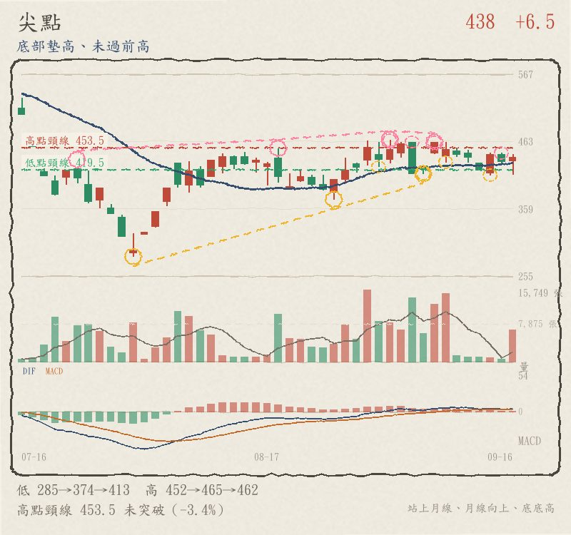
2026/09/16 12:30 盤中 438（+1.51%），相對加權指數 +0.54 個百分點；盤中累計成交值 30.2 億（全榜第 48 名，上市第 34 名）。以交易時間比例推估的今日成交量約為 20 日均量的 1.3 倍（量增）。日線結構：底部墊高、未過前高；現價在月線 427.45 之上（+2.5%）。距前一日（9/14）高點 -1.57%，距今日高點 -1.13%、距今日低點 +6.44%。圖為日線，最後一根是今日 12:30 為止的進行中 K 棒。
↑ 回上方清單
群創 3481 上市
47.8 +1.0（+2.14%）
底部墊高、未過前高 盤中成交值 29.68 億・全榜第 49 名（上市第 35 名）・相對大盤 +1.17
好條件 3/8：底底高、相對大盤強、守住今日高檔（距今日高點 1% 內）
不好條件 3/8：跌破前低、在月線之下、月線下彎
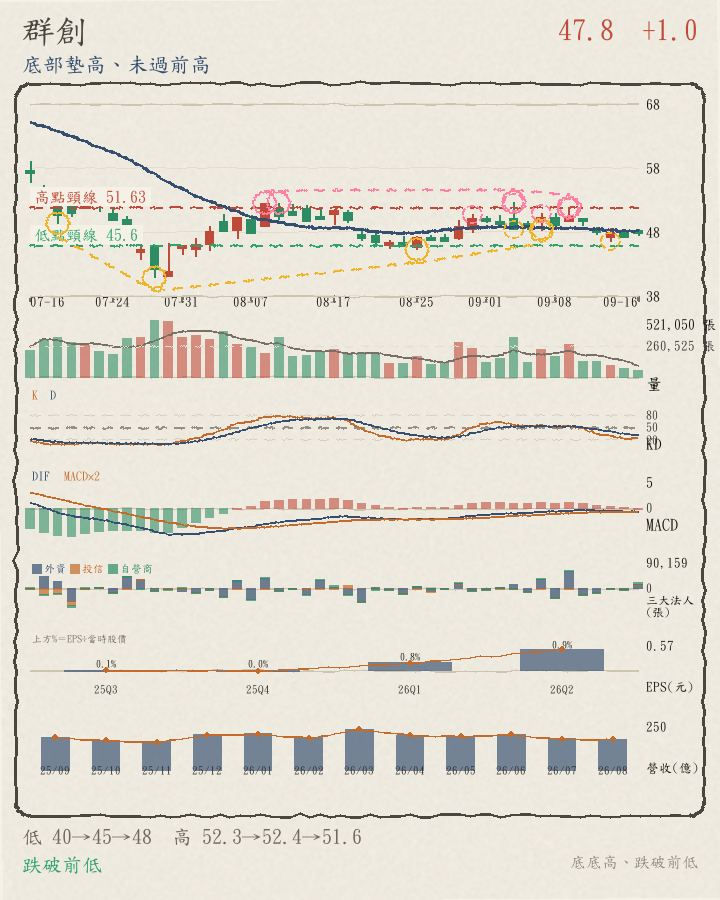
2026/09/16 12:30 盤中 47.8（+2.14%），相對加權指數 +1.17 個百分點；盤中累計成交值 29.68 億（全榜第 49 名，上市第 35 名）。以交易時間比例推估的今日成交量約為 20 日均量的 0.42 倍（量縮）。日線結構：底部墊高、未過前高；現價在月線 47.872 之下（-0.1%）。距前一日（9/14）高點 -0.62%，距今日高點 -0.62%、距今日低點 +1.27%。圖為日線，最後一根是今日 12:30 為止的進行中 K 棒。
↑ 回上方清單
前鼎 4908 上櫃
239 +15.0（+6.70%）
高點墊高、底部不穩 盤中成交值 22.02 億・全榜第 50 名（上櫃第 15 名）・相對大盤 +5.73
好條件 5/8：站上月線、月線向上、頭頭高、相對大盤強、攻擊量（量增＋上漲）
不好條件 0/8：無
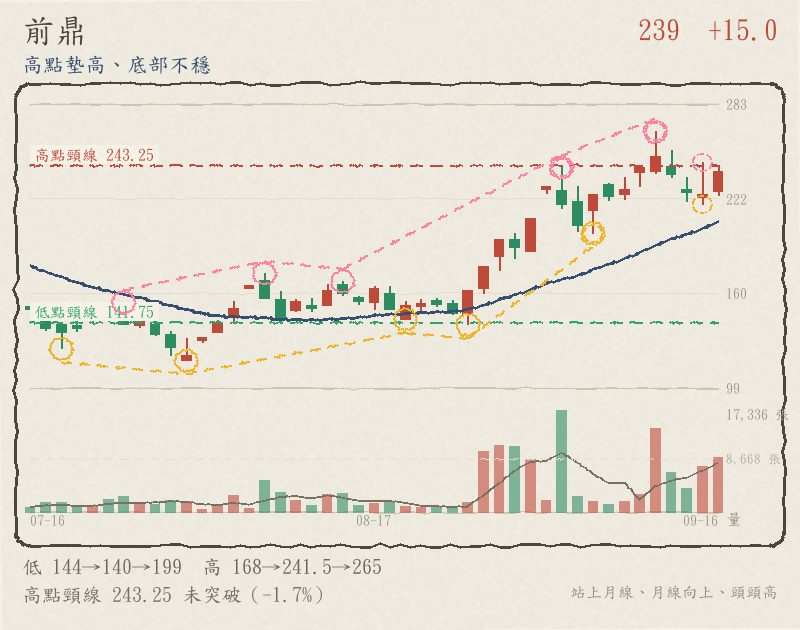
2026/09/16 12:30 盤中 239（+6.70%），相對加權指數 +5.73 個百分點；盤中累計成交值 22.02 億（全榜第 50 名，上櫃第 15 名）。以交易時間比例推估的今日成交量約為 20 日均量的 2.29 倍（爆量）。日線結構：高點墊高、底部不穩；現價在月線 202.325 之上（+18.1%）。距前一日（9/14）高點 -2.45%，距今日高點 -1.65%、距今日低點 +6.94%。圖為日線，最後一根是今日 12:30 為止的進行中 K 棒。
↑ 回上方清單
← 回股市觀察